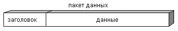

Широкое внедрение персональных компьютеров привело к необходимости обмена информацией, обрабатываемой на разных компьютерах. Как перенести большой объем информации с одного компьютера на другой? Как распечатать информацию, если всего один принтер? Как предоставить всем компьютерам выход в Интернет? Эти и многие другие проблемы решают компьютерные сети.
Компьютерная сеть - это соединение двух или более компьютеров для решения следующих задач:
Соединение, как правило, создается с помощью кабеля, но существуют и другие, более сложные средства.
В рамках одного учреждения довольно практично использовать кабельное соединение. Преобразование информации для передачи по кабелю осуществляют устройства, встраиваемые в компьютер - сетевые адаптеры. Такие местные сети получили название локальные сети. А если нам нужно соединить нашу локальную сеть с другой локальной сетью, то как протянуть кабель для подключения к сети, расположенной достаточно удаленно от данной, например, в другом здании или другом городе?
Для этого используют уже существующие кабельные соединения, такие как телефонные линии. Вопросами перекодировки информации для прохождения по телефонным линиям, занимаются специальные устройства, подключаемые к компьютеру - модемы. Можно использовать и другие способы соединения, например, радиосвязь. Устройства преобразования в этом случае будут другими.
Удаленные локальные сети, объединяются друг с другом, создавая глобальные сети. Примером глобальной сети является сеть Интернет.
Вся работа компьютеров в сети, независимо от назначения и размеров сети, сводится только к одному: обмену информацией. Каждый компьютер имеет встроенный сетевой адаптер, который в свою очередь подключается к кабельной системе.
Перед передачей по сети информация формируется в пакеты. Сетевые адаптеры общаются между собой, передавая и принимая пакеты с информацией. Каждый пакет состоит из двух основных частей: Заголовок и Данные.
Заголовок содержит адрес компьютера-отправителя и адрес компьютера-получателя.
Раздел данных содержит передаваемую информацию.
Переданный в сеть пакет отправляется на все компьютеры. Получив пакет, они читают заголовок, и только тот компьютер, которому этот пакет адресован, прочтет данные из этого пакета.
Если компьютер должен передать по сети, например, текстовый файл большого размера, то сетевой адаптер этого компьютера разделит файл на фрагменты и передаст каждый фрагмент в отдельном пакете. Делается это затем, чтобы большие файлы не загружали сеть на долгое время, давая возможность другим компьютерам работать в сети.
Принимающий сетевой адаптер получит все передаваемые ему пакеты, соединит их в единый файл и только после этого передаст готовый файл своему компьютеру. Таким образом, в сети один за другим передаются пакеты от разных компьютеров, не создавая «заторов».
Пакет имеет строго определенный формат, поэтому любой компьютер, получив пакет, сможет его прочитать. Этот формат определяется сетевым протоколом, который устанавливается в настройках операционной системы. Протокол представляет собой набор правил и соглашений для передачи информации по компьютерной сети. Если на компьютерах установлен одинаковый сетевой протокол, то они смогут «понимать» друг друга. Компьютеры с разными протоколами имеют разный формат пакетов и соответственно друг друга не поймут, также как люди, говорящие на разных языках. Например, пакет Ethernet может иметь размер от 64 до 1 518 байт, из них 18 байт используется под заголовок. Поэтому в одном пакете Ethernet можно передавать не более 1 500 байт данных. Пакеты Token Ring вмещают 4 202 байта данных.
Иногда пакет называют кадром (Frame).
Для стандартизации передаваемой по сети информации, разработаны так называемые сетевые протоколы. Протокол представляет собой набор правил и соглашений для оформления и передачи информации по компьютерной сети. Пакет, созданный по выбранному сетевому протоколу, имеет строго определенный формат. Если на компьютерах сети установлен одинаковый сетевой протокол, то они смогут «понимать» друг друга, т.е. читать пакеты. Компьютеры с разными протоколами имеют разный формат пакетов и соответственно друг друга не поймут, также как люди, сидящие в одной комнате, но говорящие на разных языках.
Есть три наиболее распространенных протокола, используемых в компьютерных сетях Microsoft - NetBEUI, TCP/IP, IPX/SPX.
Сетевой протокол Microsoft TCP/IP особенно широко используется в сети Интернет. Поэтому для совместимости пакетов локальной сети с пакетами сети Интернет мы будем пользоваться только протоколом TCP/IP.
Microsoft TCP/IP-протокол, на основе которого разработаны многие службы в операционной системе Windows, дает следующие возможности: